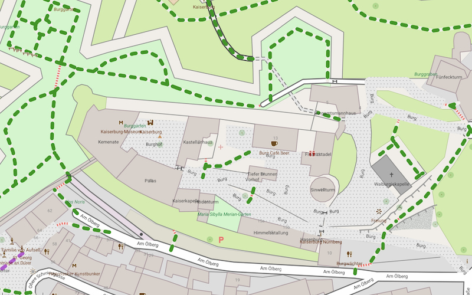
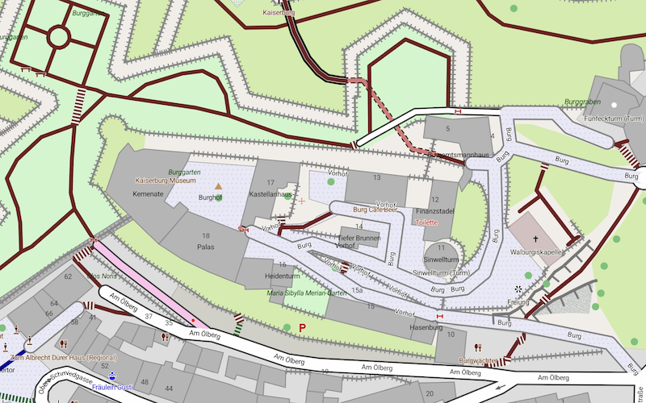

Unterstütze dieses Kartenprojekt
Wenn du aus den Freizeitkarten etwas Positives für dich ableiten konntest, dann denke doch einmal über eine kleine Unterstützung nach. Betrachte dies wie eine Einladung zu einer "Tasse Tee und einem Stück Kuchen".
Spendenmöglichkeit durch Überweisung auf ein deutsches Bankkonto
Kontoinhaber: Klaus Tockloth
Kreditinstitut: Volksbank Münster eG
BIC: GENODEM1MSC
IBAN: DE48401600501701199600
Spendenmöglichkeit durch Geldtransfer via PayPal
Danke für deine Unterstützung - du hilfst hierdurch mit, das Kartenprojekt fortzuführen.
An der Ausarbeitung der Freizeitkarten arbeiten aktiv mit:
- Stephan Brugger (Entwicklung, Designs fzk-outdoor-contrast, fzk-outdoor-soft)
- Patrik Brunner (Entwicklung, Server-Administration)
- Jens Gruhlke (Build-Management, Server-Administration)
- Christian Kraemer (Build-Management, Server-Administration)
- Klaus Tockloth (Entwicklung, Design freizeitkarte)
Neuigkeiten zum Kartenprojekt
Hier gibt es Informationen zu den Freizeitkarten ... meist Hinweise zur Veröffentlichung neuer Kartenausgaben.
Link: @freizeitkarte folgen
Hinweis für Programm- / App-Entwickler
Alle Karten und Themes werden zusätzlich in einem programmtechnisch auswertbarem Repository aufgeführt. Hierdurch können z.B. Downloads direkt in die App integriert werden.
Link: XML-Repository

Deutschland, Nürnberg, viele Details zur Kaiserburg (Design freizeitkarte).
Angaben gemäß § 5 TMG
Klaus Tockloth, Im Seihof 34
D-48161 Münster, Germany
eMail: freizeitkarte@googlemail.com
Weiteres Projekt:
Link: Karten für Garmin-GPS-Geräte
Haftung für Inhalte
Die Inhalte unserer Seiten wurden mit größter Sorgfalt erstellt. Für die Richtigkeit, Vollständigkeit und Aktualität der Inhalte können wir jedoch keine Gewähr übernehmen. Als
Diensteanbieter sind wir gemäß § 7 Abs.1 TMG für eigene Inhalte auf diesen Seiten nach den allgemeinen Gesetzen verantwortlich. Nach §§ 8 bis 10 TMG sind wir als Diensteanbieter jedoch
nicht verpflichtet, übermittelte oder gespeicherte fremde Informationen zu überwachen oder nach Umständen zu forschen, die auf eine rechtswidrige Tätigkeit hinweisen. Verpflichtungen zur
Entfernung oder Sperrung der Nutzung von Informationen nach den allgemeinen Gesetzen bleiben hiervon unberührt. Eine diesbezügliche Haftung ist jedoch erst ab dem Zeitpunkt der Kenntnis
einer konkreten Rechtsverletzung möglich. Bei Bekanntwerden von entsprechenden Rechtsverletzungen werden wir diese Inhalte umgehend entfernen.
Haftung für Links
Unser Angebot enthält Links zu externen Webseiten Dritter, auf deren Inhalte wir keinen Einfluss haben. Deshalb können wir für diese fremden Inhalte auch keine Gewähr übernehmen. Für die
Inhalte der verlinkten Seiten ist stets der jeweilige Anbieter oder Betreiber der Seiten verantwortlich. Die verlinkten Seiten wurden zum Zeitpunkt der Verlinkung auf mögliche
Rechtsverstöße überprüft. Rechtswidrige Inhalte waren zum Zeitpunkt der Verlinkung nicht erkennbar. Eine permanente inhaltliche Kontrolle der verlinkten Seiten ist jedoch ohne konkrete
Anhaltspunkte einer Rechtsverletzung nicht zumutbar. Bei Bekanntwerden von Rechtsverletzungen werden wir derartige Links umgehend entfernen.
Urheberrecht
Die durch die Seitenbetreiber erstellten Inhalte und Werke auf diesen Seiten unterliegen dem deutschen Urheberrecht. Die Vervielfältigung, Bearbeitung, Verbreitung und jede Art der
Verwertung außerhalb der Grenzen des Urheberrechtes bedürfen der schriftlichen Zustimmung des jeweiligen Autors bzw. Erstellers. Downloads und Kopien dieser Seite sind nur für den
privaten, nicht kommerziellen Gebrauch gestattet. Soweit die Inhalte auf dieser Seite nicht vom Betreiber erstellt wurden, werden die Urheberrechte Dritter beachtet. Insbesondere werden
Inhalte Dritter als solche gekennzeichnet. Sollten Sie trotzdem auf eine Urheberrechtsverletzung aufmerksam werden, bitten wir um einen entsprechenden Hinweis. Bei Bekanntwerden von
Rechtsverletzungen werden wir derartige Inhalte umgehend entfernen.
Datenschutz
Die Betreiber dieser Webseiten nehmen den Schutz Ihrer persönlichen Daten sehr ernst. Die Nutzung dieser Webseiten ist ohne die Angabe von personenbezogenen Daten uneingeschränkt möglich.
Es werden keinerlei personenbezogenen Daten erhoben, gespeichert oder weitergeleitet. Wir weisen darauf hin, dass die Datenübertragung im Internet (z.B. bei der Kommunikation per E-Mail)
Sicherheitslücken aufweisen kann. Ein lückenloser Schutz der Daten vor dem Zugriff durch Dritte ist nicht möglich.
Kontaktdaten
Der Nutzung von im Rahmen der Impressumspflicht veröffentlichten Kontaktdaten durch Dritte zur übersendung von nicht ausdrücklich angeforderter Werbung und Informationsmaterialien wird
hiermit ausdrücklich widersprochen. Die Betreiber der Seiten behalten sich ausdrücklich rechtliche Schritte im Falle der unverlangten Zusendung von Werbeinformationen, etwa durch
Spam-Mails, vor.
Cookies
Diese Webseiten verwenden keine Cookies.
DSGVO
Diese Webseiten erheben, speichern oder verarbeiten keine personenbezogenen Daten.
Server-Log-Files
Im Rahmen des Betriebs dieser Webseiten erheben und speichern wir Informationen in sogenannten Server-Log-Files, die Ihr Browser automatisch an uns übermittelt. Dies sind:
- Browsertyp / Browserversion
- verwendetes Betriebssystem
- Referrer URL
- Hostname des zugreifenden Rechners
- Uhrzeit der Serveranfrage
Diese Daten sind nicht bestimmten Personen zuordenbar. Eine Zusammenführung dieser Daten mit anderen Datenquellen wird nicht vorgenommen. Wir behalten uns vor, diese Daten nachträglich zu
prüfen, wenn uns konkrete Anhaltspunkte für eine rechtswidrige Nutzung bekannt werden.

Deutschland, Nürnberg, viele Details zur Kaiserburg (Design fzk-outdoor-contrast).
Nutzung des Kartenmaterials
Die Nutzung des Kartenmaterials erfolgt auf eigene Gefahr. Das Kartenmaterial kann Fehler enthalten oder unzureichend sein. Die Ersteller dieser Karten übernehmen keinerlei Gewährleistung
oder Haftung für Schäden die direkt oder indirekt durch die Nutzung des Kartenmaterials entstehen.
Lizenzbedingungen des Kartendaten
Map data © OpenStreetMap contributors (ODbL). Die dargestellten Kartenobjekte basieren auf den Daten des OpenStreetMap-Projektes. OpenStreetMap ist eine freie, editierbare Karte der
gesamten Welt, die von Menschen wie dir erstellt wird. OpenStreetMap ermöglicht es geographische Daten gemeinschaftlich von überall auf der Welt anzuschauen und zu bearbeiten.
Link: www.openstreetmap.org/
Lizenz: www.openstreetmap.org/copyright/en
Lizenzbedingungen der Höhenlinien
Die Höhenlinien basieren, abhängig von der Verfügbarkeit, auf unterschiedlichen Quellen:
Data provider name: Various (compiled by Sonny)
Data provider homepage: sonny.4lima.de/
License type: CC BY 4.0
License string: sonny.4lima.de - SONNY's LiDAR DIGITAL TERRAIN MODELS (DTM) OF EUROPEAN COUNTRIES, CC BY 4.0
Data provider name: U.S. Geological Survey
Data provider homepage: usgs.gov/centers/eros
License type: Public Domain
License string: U.S. Geological Survey (public domain), eros.usgs.gov
Data provider name: JAXA (Japan Aerospace Exploration Agency)
Data provider homepage: earth.jaxa.jp/en/
License type: CC BY 4.0
License string: AW3D30 - JAXA (Japan Aerospace Exploration Agency), CC BY 4.0
Lizenzbedingungen der Karten
Produced map © FZK project. Die hier verfügbaren Karten stellen ein aus Karten- und Höhendaten abgeleitetes Werk (produced work) dar. Die Karten können uneingeschränkt verwendet
werden.
Bereitstellung der OpenStreetMap-Kartendaten
Tagesaktuelle länder- und regionsspezifische Extrakte der OSM-Datenbankdaten werden uns durch die Firma Geofabrik GmbH (Karlsruhe) zur Verfügung gestellt.
Link: https://www.geofabrik.de
Erstellung der Karten
Alle Karten wurden mit den Tools "osmfilter, osmconvert und mapwriter" erstellt.
Link: wiki.openstreetmap.org/wiki/DE:Osmfilter
Link: wiki.openstreetmap.org/wiki/DE:Osmconvert
Link: github.com/mapsforge/mapsforge
Lizenz: LGPL3 license
Erstellung der Höhenlinien
Die Höhenlinien wurden mit dem Tool "phyghtmap" erstellt.
Link: github.com/agrenott/pyhgtmap
Lizenz: GPL-2.0 license
Markenzeichen
Mac OS® is a registered trademark of Apple Inc. (www.apple.com).
Windows® is a registered trademark of Microsoft Corp. (www.microsoft.com).
Bildnachweis
Die Übersicht- / Reliefkarten wurden mit QGIS erstellt und basieren auf den Daten von "Natural Earth" (www.naturalearthdata.com).
Android-Apps
Die Apps "Locus Map Free" und "Locus Map Pro" sind Programme von Asamm Software, s. r. o., Prag (www.locusmap.eu).
Die Apps "OruxMaps" und "OruxMaps Donate" sind Programme von Jose Vasquez, Madrid (www.oruxmaps.com).